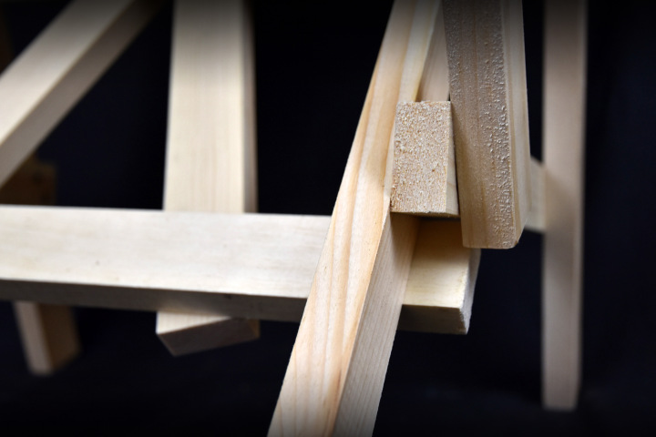

For the first project for 4.031 Objects and Interactions, we learned woodworking through making Enzo Mari's Autoprogettazione Q chair. For the design part, being all about flexibility and change, I decided to make a modular shelf that user can reassemble based on needs. As a completely newbie to 3D modeling and woodwork, I was not very precise when it came to making the model and cutting wood. Now I have to deal with the awkward gap between two of the pieces when they come together. It was a good lesson to learn...

Modular Shelf for People Afraid of Commitment!